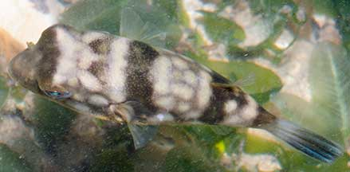
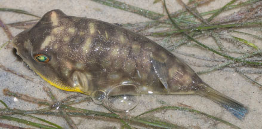
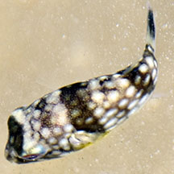
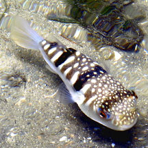
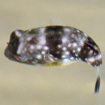
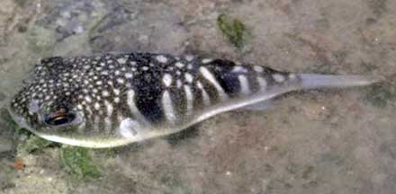
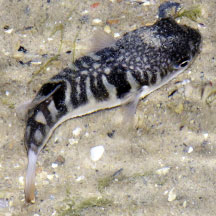
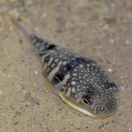
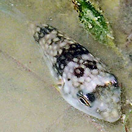
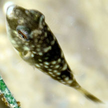

Milk-spotted
pufferfish
Chelonodon patoca
Family Tetraodontidae
updated
Nov 2020
Where
seen? This pretty spotted fat fish is sometimes seen on
our shores. One was seen half-buried in a sandy stretch at
Tanah Merah near a freshwater outflow. Elsewhere, it is common in estuaries and shallow waters, in sand flats, mud flats and seagrass meadows, often in schools. Juveniles are common in mangroves,
Features: Grows to about 33cm,
but those seen were 8-12cm. The nasal organ has a pair of elongated
flaps. It has a grey or brown back with large round or oval white
spots. It has a yellow band along the lower side from chin to tail.
The underside is white. Those seen had tail tips that were yellowish or bluish. |

Labrador,
Jul 05 |

Changi, Apr 10 |
What does it eat? When small it feeds mostly on detritus, as it grows, it transitions to a diet of animals that live on the ground.
Human uses: Although it is toxic (gonad, liver, flesh and skin), it is considered a delicacy in Japan. |
| Milk-spotted
pufferfishes on Singapore shores |
| Other sightings on Singapore shores |

Chek Jawa, Dec 2024
Photo shared by Marcus Ng on facebook. |
|

Pasir Ris Park, Sep 20
Photo shared by Loh Kok Sheng on facebook. |

Chek Jawa, May 16
Photo shared by Jianlin Liu on facebook. |
|

Changi, Aug 19
Photo shared by Loh Kok Sheng on facebook. |

Changi, Jun 11
Photo shared by James Koh on flickr. |

East Coast Park, Jul 16
Photo shared by Loh Kok Sheng on his blog. |

East Coast Park, Sep 19
Photo shared by Dayna Cheah on facebook. |

East Coast Park, Aug 20
Photo shared by Toh Chay Hoon on facebook. |

East Coast Park (B), Nov 25
Photo shared by Loh Kok Sheng on facebook. |
|
|
Links
References
- Allen, Gerry,
2000. Marine
Fishes of South-East Asia: A Field Guide for Anglers and Divers.
Periplus Editions. 292 pp.
- Kuiter, Rudie
H. 2002. Guide
to Sea Fishes of Australia: A Comprehensive Reference for Divers
& Fishermen
New Holland Publishers. 434pp.
|
|
|